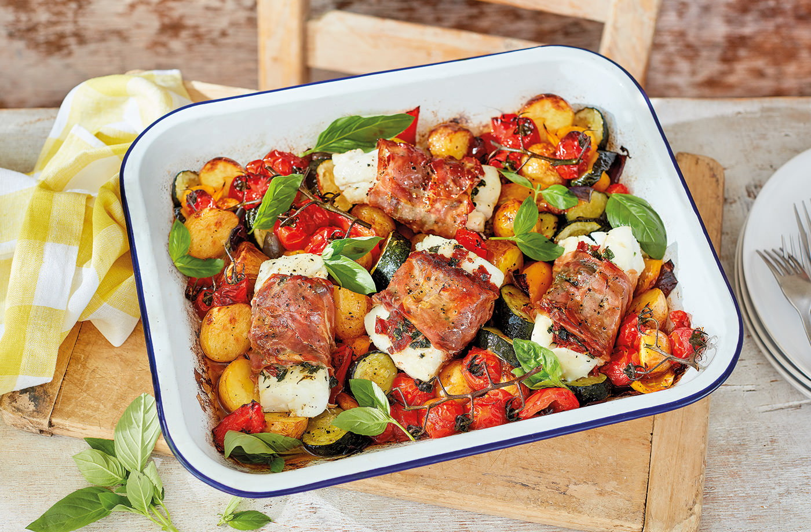

Anniversary
- August 2025
Morning
- Go Grocerie Shopping for the Picnic
- Picnic at Cocobeach and else the old spot at Club Nautique
- Photobooth
- 📍Le Bateleur, 12 Cours Saleya Nice
Afternoon
- Gentle ride on a mini electric train with panoramic views (1h)
- Chose one:
- Cute Ice Cream Date at the Beach Le Galet
- Mocktail at WakaBar
- Drink at Movida
- Drink at Farago on the roof
Evening (Dinner)
- Le Patio Restaurant & Terrasse (9pm)
- Return to the Promenade for a hand-in-hand moonlit walk along the sea.

Roasted monkfish with foaming butter, flowered artichokes in almond milk and lemon

Fresh pea risotto with thyme focaccia tuiles
Evening (Dinner)
- Jazz Bar → Wayne's Bar
- Fries & Milkshake at Five Guys <3
- Cuddle until we die
- Watch a series <3
- Play Nintendo Switch 👀
- Buy nutella and put it on any body part that are not covered
-
Play a fun game 👀
- Seductive Dice
What you need:
- Two dice (or a dice app)
- A timer (or phone)
- A comfortable, private setting
- You’ll create a grid of 6 actions and 6 body parts. One die determines the action, the other the body part. You take turns rolling both dice and performing the result on your partner (or letting them do it to you).
Actions (Die 1):
- Kiss
- Lick
- Massage
- Tease with fingertips
- Whisper fantasy
- Use a prop (ice cube, feather, etc.)
🎲 Body Parts (Die 2):
- Neck
- Inner thigh
- Lips
- Back
- Chest
- Surprise (partner chooses)
Rules:
- Set a timer for 3–5 minutes per turn.
- The roller must do the full action unless they “pass,” in which case the partner decides a playful "penalty" (e.g., strip an item of clothing, give a compliment, etc.).
- Add your own house rules or customize the list to your taste or comfort level.